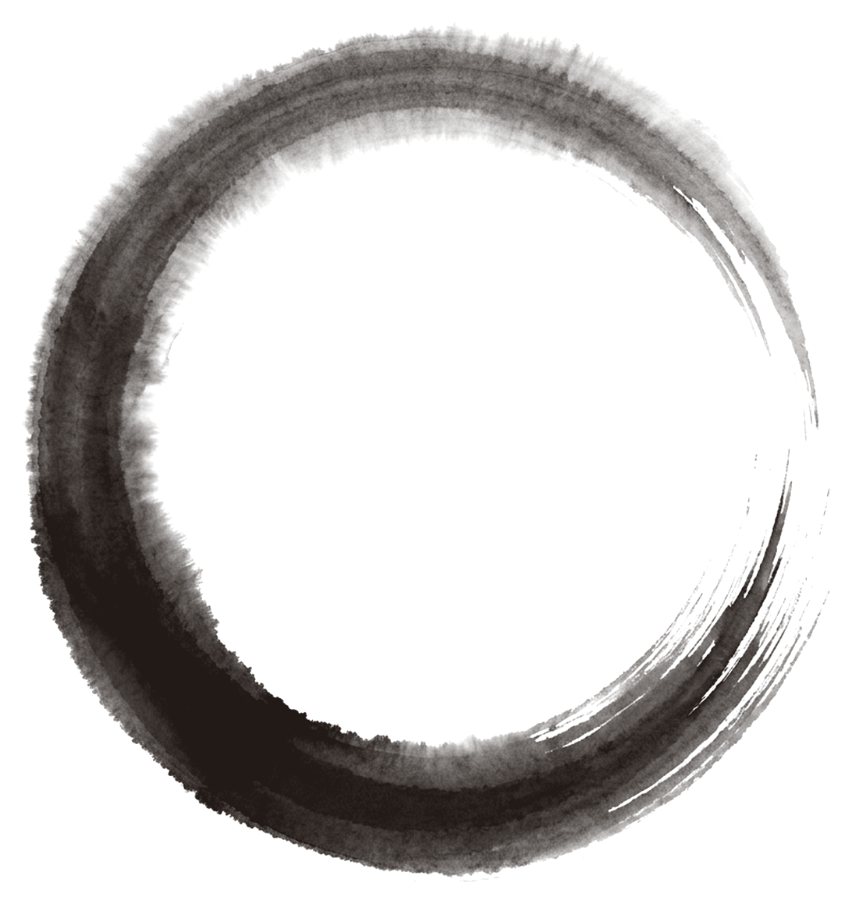
A record kept while the thing is still forming. Those who enter share one reality. What they become inside it, they make.
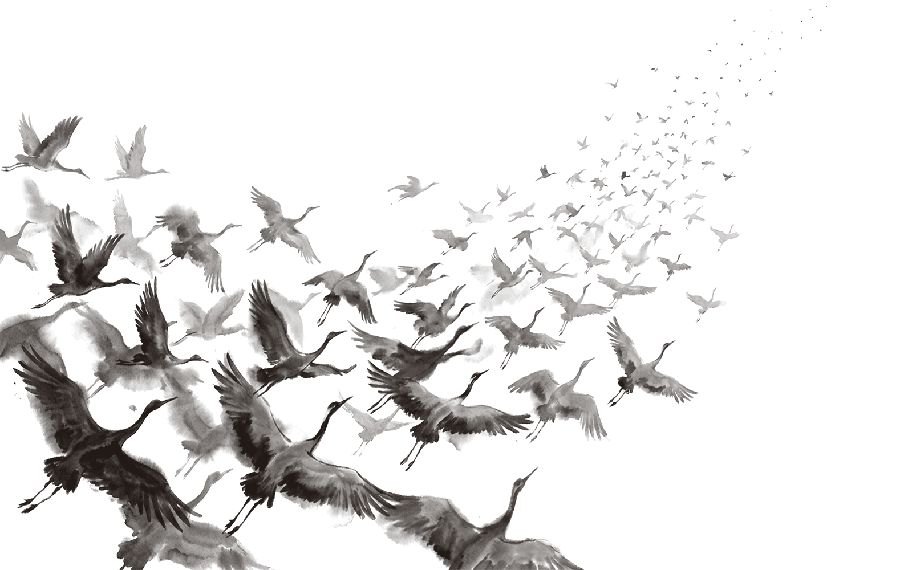
소명The Call to Purpose
We know what we want, then stop growing into it.
It never goes all at once. It drifts. It gets off track. It loses grace. The movement decays, and the days close over it the way water closes over an ember, the current of the stream swallowing it whole. And after a while, the sensation of passion, indistinguishable from the rest, gets mistaken for what life should be.
Effort rarely reverses it. Two things do. Perspective, which makes a situation legible from outside of it — the seeker becomes the seer. And structure, a form steady enough to hold it and establish it as real. A ship to steer.
A fire that lives without flame, awaiting its spark. For when we return to it — a cycle, a circle, a rhythm of the groove that brings us back home.
Mushin Syndicate
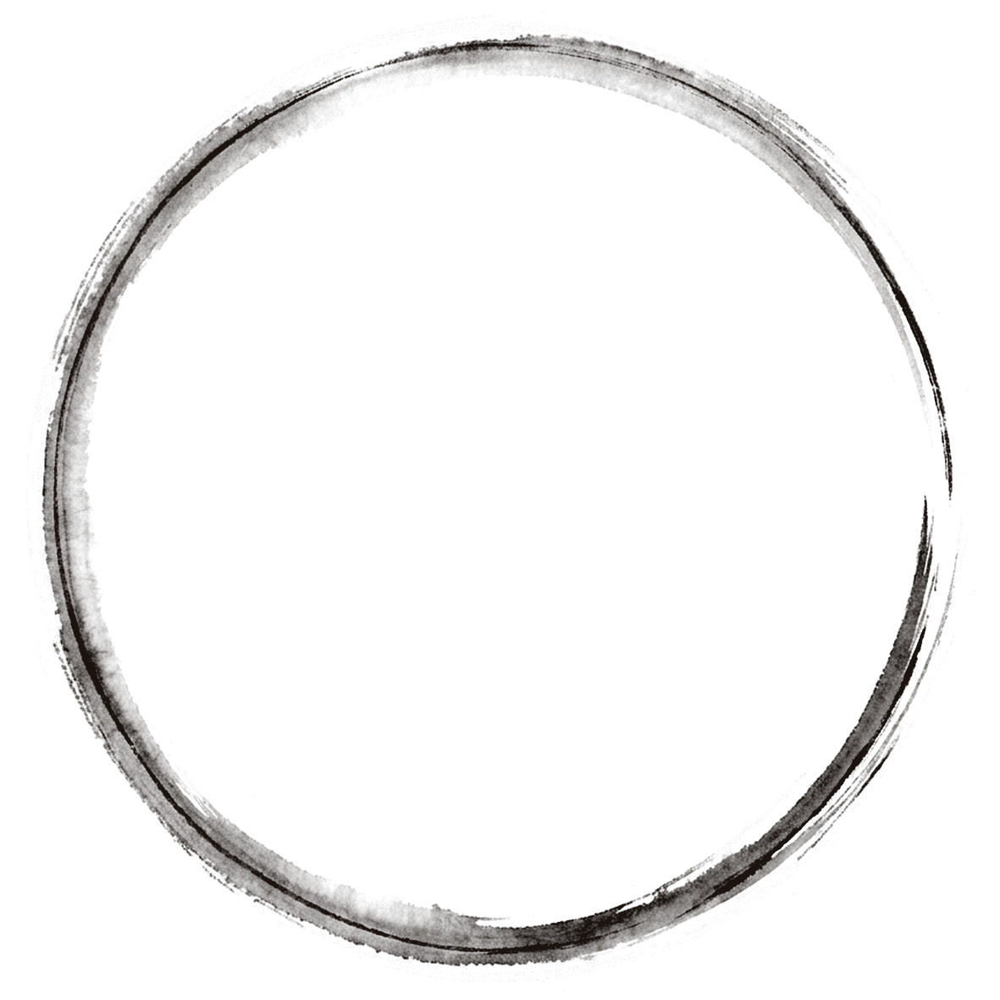
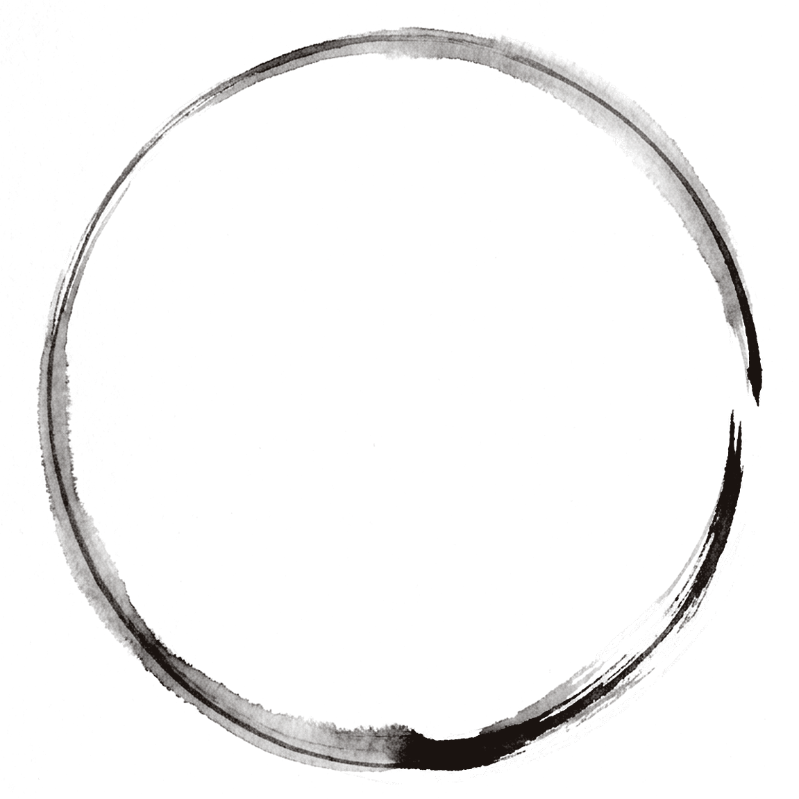
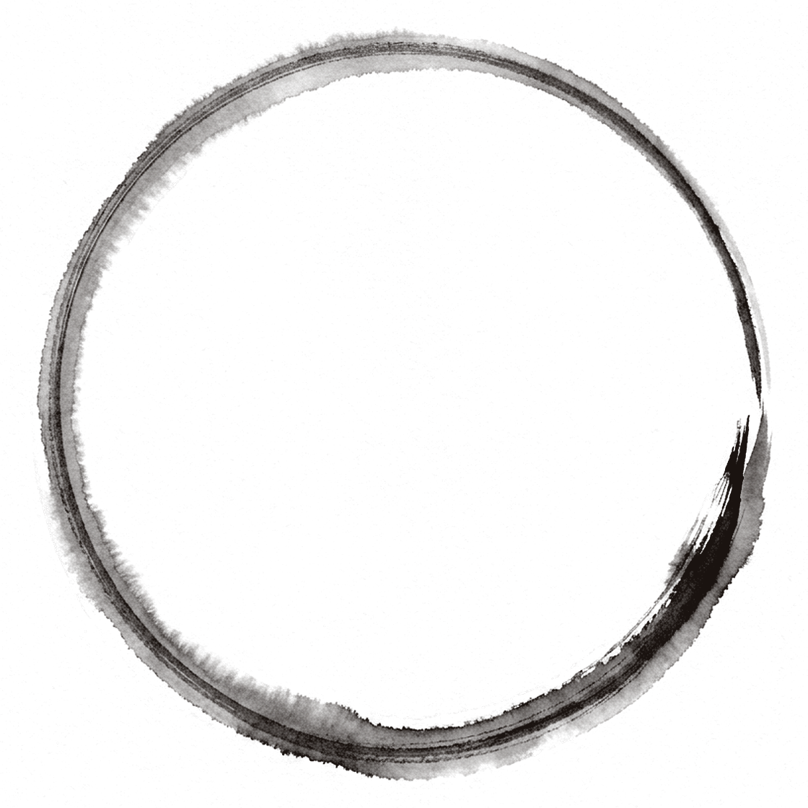
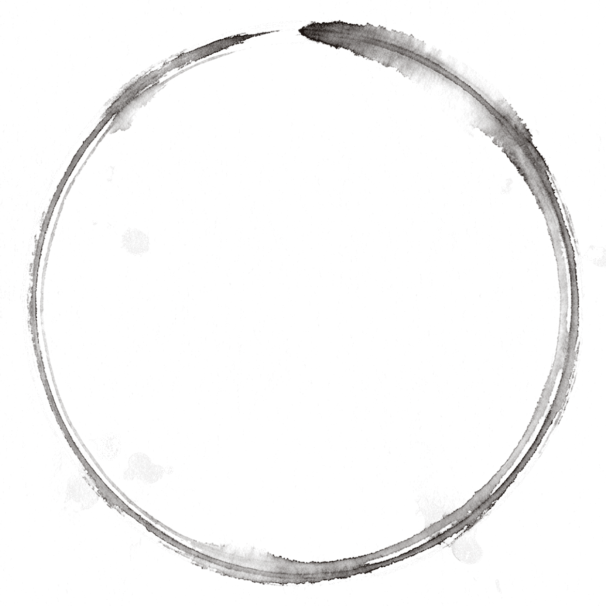
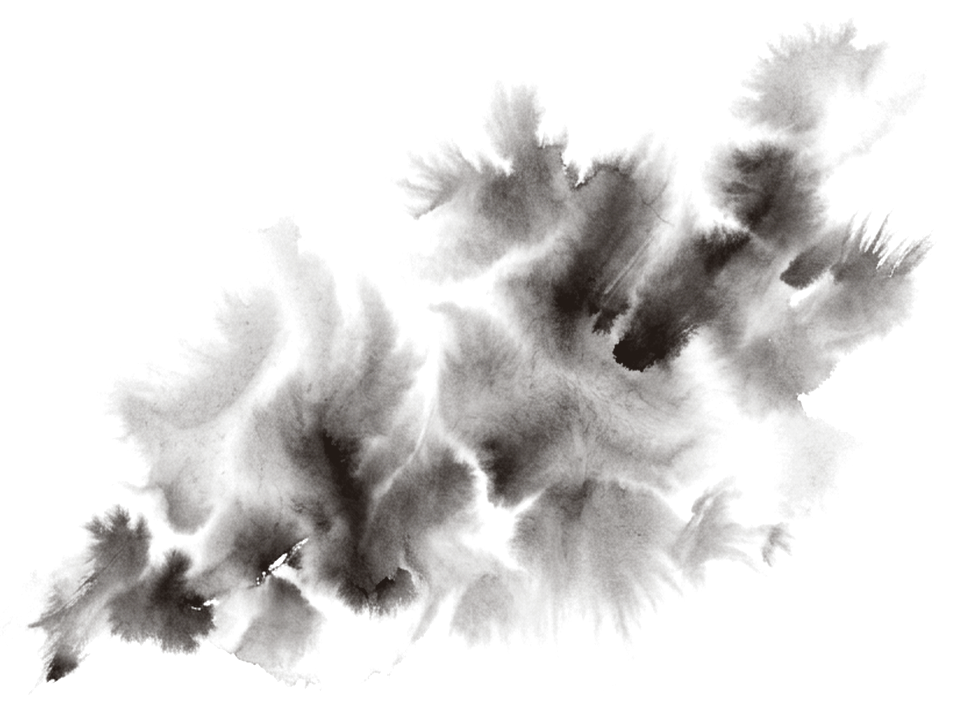
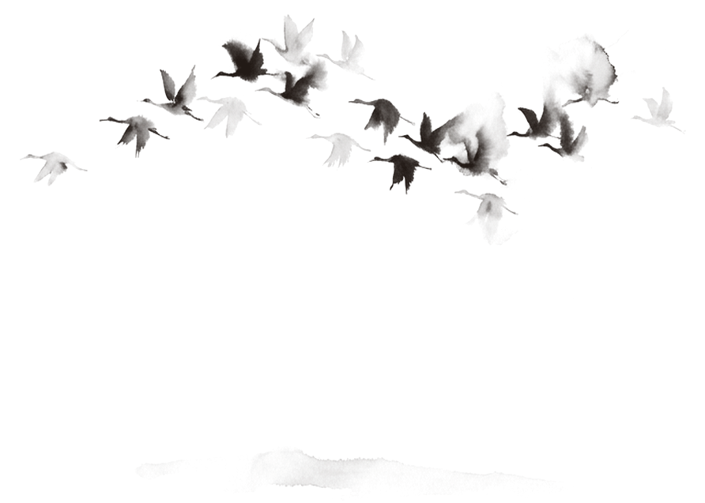
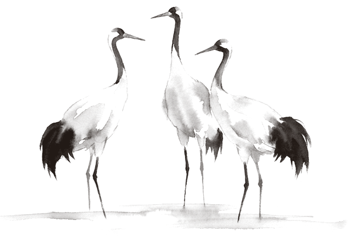
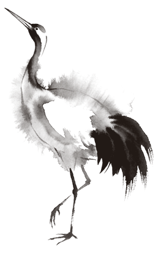
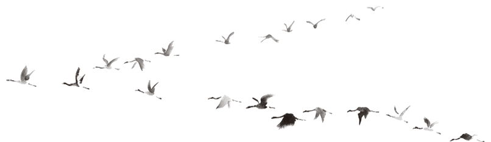
영물The Familiar
Every member is given an egg. What comes out of it is a familiar. Each member has their very own.
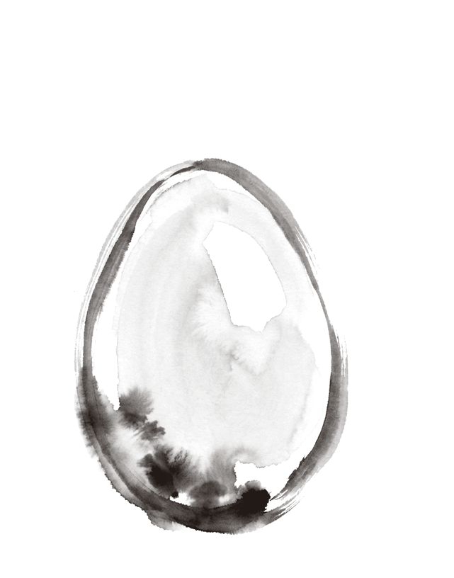
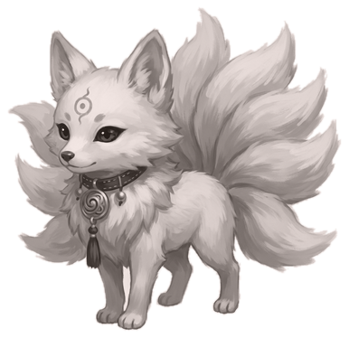
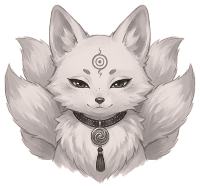
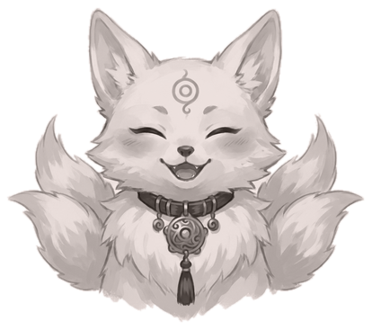
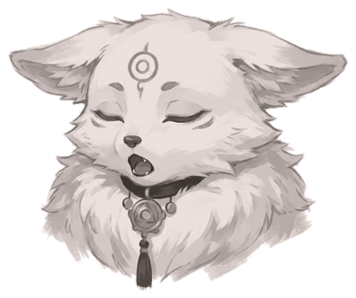
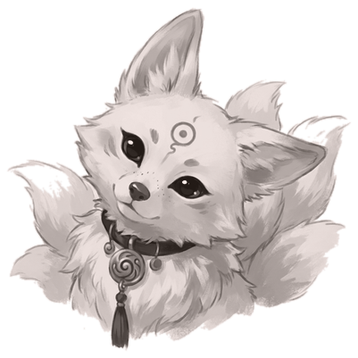
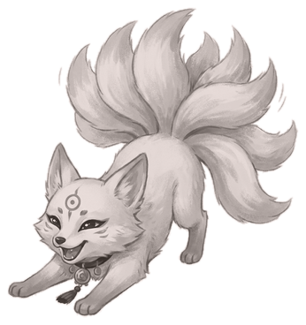
FirstIt asks first.
SecondIt grows with them.
ThirdIt helps them in their journey of mindful creation.
The Art
Relics, artifacts and talismans. Each is made of a material whose nature the member is carrying, and each holds a work that wakes when brought close.
The Reception
The movement never pays at the door. It never seeks a place to exist.
A place is prepared for it. Reception is always present for a movement that brings gifts wherever it goes.
The movement arrives into rooms whose livelihood it knows already.
Whatever flows in abundance is given freely. That is our Grace.
The Circle
This is where it starts. The spiral opens from the center outward, and it does not end while the movement does not.
Nothing grows past what can be held. The movement serves when there is capacity, and dignity here means one thing only: to have the peaceful opportunity to live the honorable life one actually wanted.
The spirit of the movement is grace. It is not competing. It is not fighting. It is gracefully finding harmony in existence embrace.
For the rest, we're smart people. We'll figure it out.
- attuned
- blessed
- granted
- witnessed